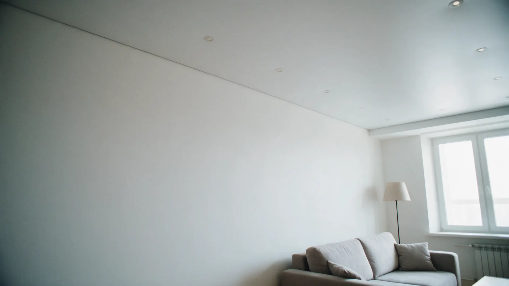
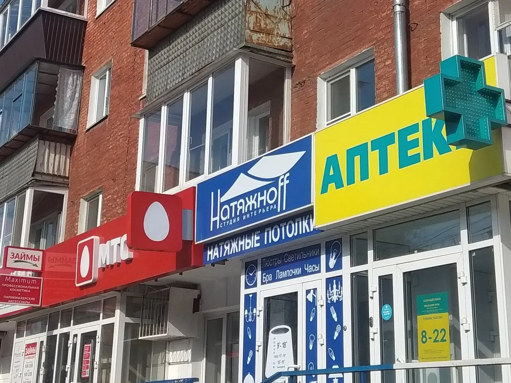
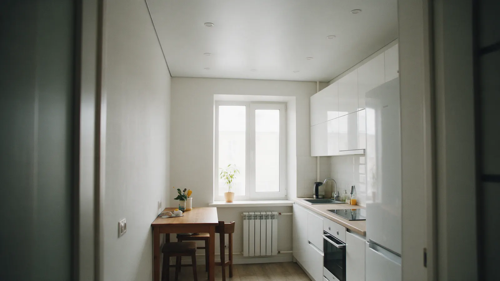
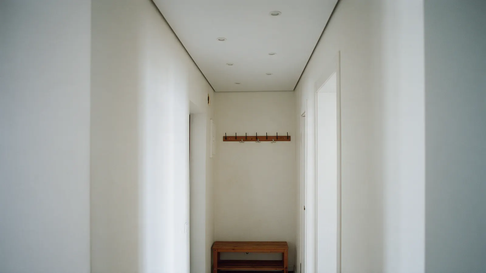

Потолочные системы на Кирова, 18
Натяжные потолки в Глазове: замер, образцы и монтаж
Клиентка пишет: замерщик всё померил, показал образцы и помог выбрать фактуру, а монтаж занял пару дней. Записаться на замер можно во ВКонтакте: кнопка на сайте откроет страницу компании.

- Потолочные системы и товары для интерьера
- Замер, образцы и выбор фактуры
- Запись на замер во ВКонтакте
Услуги и цены
На карточке Яндекс.Карт цен нет. Направление ниже взято с карточки, цену назовут после замера.
Потолки
- Натяжные потолкиуточнить
- Замер и подбор фактурыуточнить
Цену назовут после замера.
Как заказать
- 01
Написали во ВКонтакте
Кнопка на сайте откроет страницу компании, назовите удобный день и время.
- 02
Замер
Замерщик меряет помещение и показывает образцы.
- 03
Выбрали фактуру и цену
Цену назовут после замера.
- 04
Монтаж
Клиентка пишет: сделали за пару дней, без пыли и грязи.



Что пишет клиентка
Образцы и выбор фактуры
Из отзыва: замерщик показал образцы и помог выбрать фактуру.
Без пыли и грязи
Так пишет клиентка о монтаже на кухне и в коридоре.
Цена не менялась
Из того же отзыва: цена осталась такой, как договаривались.
Запись во ВКонтакте
Заявку на замер можно отправить прямо из сайта.
Контакты
- Адрес
- Кирова, 18, Глазов